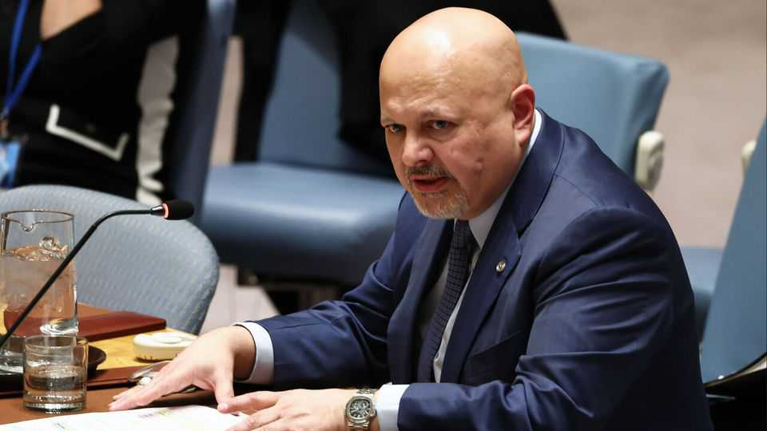

The International Criminal Court puts its house in order
But a new chief prosecutor will not end its troubles

Jul 30th 2026
WHEN KARIM KHAN was running for the job of leading the International Criminal Court (ICC) in The Hague, the committee assigned to selecting candidates made no bones about his shortcomings. He was not among the most highly qualified, it said, before damning him with faint praise: “Mr Khan is a charismatic and articulate communicator who is well aware of his achievements.” Alas, the countries belonging to the court did not read between the lines and in 2021 appointed him to a nine-year term as chief prosecutor.
Regret followed, though for a different reason. On July 24th they took the unprecedented step of sacking him over allegations of sexual misconduct. Mr Khan has strenuously denied any wrongdoing or having a sexual relationship with the female staffer who made the allegations.
The members of the court, which has the power to investigate and prosecute people for the most serious war crimes and crimes against humanity, may have wished to draw a line under a scandal that has damaged the credibility of the ICC since 2024, when the allegations first emerged. “The proceedings had reached a point where it was really problematic for the institution for him to continue, whatever the merits or demerits of the claim,” says Stephen Pomper, who held the ICC portfolio under Barack Obama.
But the court’s members are likely to be disappointed again if they hope that Mr Khan’s firing will turn things around. It is unlikely to tackle the deep troubles facing the court, including American sanctions against some of its staff and a recent threat by Marco Rubio, America’s secretary of state, to “dismantle the ICC—brick by brick, if necessary”.
Critics of Mr Khan’s treatment argue that he was removed because he had put the court on a collision course with America when he issued arrest warrants for Binyamin Netanyahu, Israel’s prime minister, and Yoav Gallant, its then defence minister, over their actions during the war in Gaza. There is no evidence backing this claim. The court’s Palestinian representative explicitly rejects it, saying Mr Khan’s removal “was not a political proxy vote on any situation before the ICC”. Nonetheless, the prosecutor’s dismissal will harden views in many developing countries, particularly in Africa, that the court is more willing to bring cases against their citizens than against those of powerful countries.
They are not wrong. The ICC, aware that it has no police or army to enforce its judgments, has always been careful not to antagonise powerful countries. In 2019 its judges rejected the chief prosecutor’s request to investigate alleged American war crimes in Afghanistan, arguing that it “would not serve the interests of justice”. (America has never signed up to the ICC.)
A wiser prosecutor might have better navigated the delicate balance between the principles of universal justice and the messy world of great-power politics. What the court needs is an unflashy and competent prosecutor who can focus on cases with the best chance of success, says Sabine Nölke, a retired Canadian diplomat who was the head of the selection committee that initially rejected Mr Khan for failing to meet these criteria. Instead, the ICC’s members have arguably been dazzled by self-promoters. “That needs to change,” she says. ■